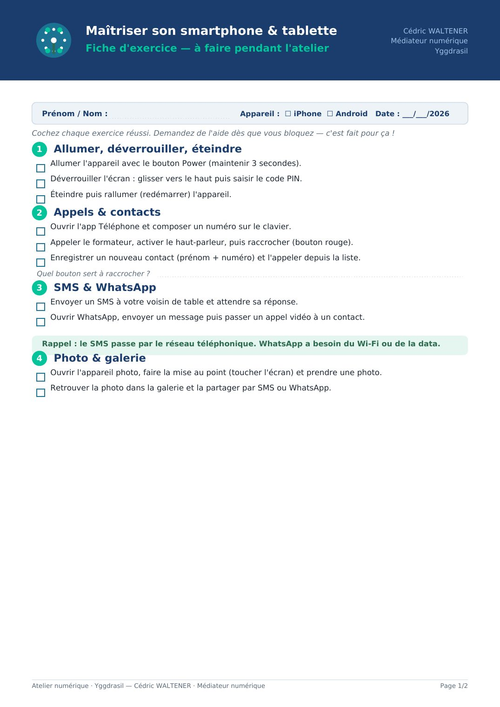
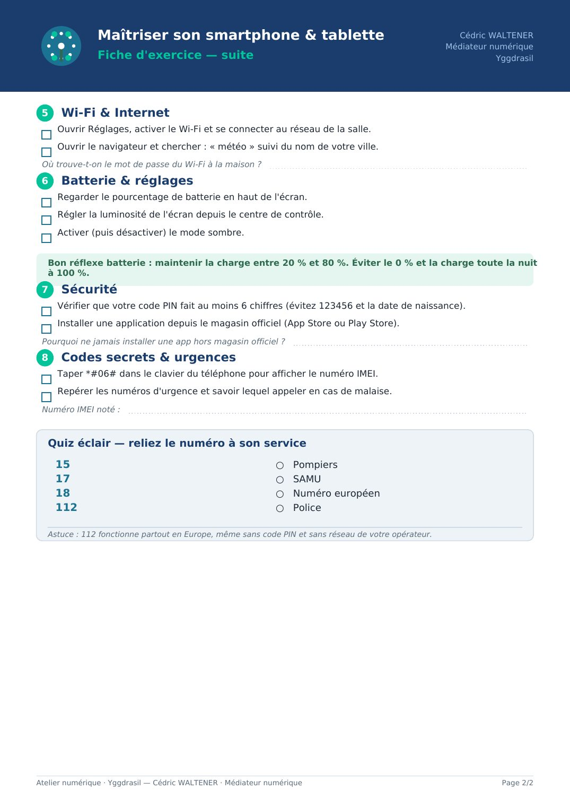

⏳ Vérification de votre niveau…


📄 Texte de la page (traduisible — les images ci-dessus restent en français)
Maîtriser son smartphone & tablette Cédric WALTENER Médiateur numérique Fiche d'exercice — à faire pendant l'atelier Yggdrasil
Prénom / Nom : Appareil : ☐ iPhone ☐ Android Date : ___/___/2026
Cochez chaque exercice réussi. Demandez de l'aide dès que vous bloquez — c'est fait pour ça !
1 Allumer, déverrouiller, éteindre Allumer l'appareil avec le bouton Power (maintenir 3 secondes). Déverrouiller l'écran : glisser vers le haut puis saisir le code PIN. Éteindre puis rallumer (redémarrer) l'appareil.
2 Appels & contacts Ouvrir l'app Téléphone et composer un numéro sur le clavier. Appeler le formateur, activer le haut-parleur, puis raccrocher (bouton rouge). Enregistrer un nouveau contact (prénom + numéro) et l'appeler depuis la liste. Quel bouton sert à raccrocher ?
3 SMS & WhatsApp Envoyer un SMS à votre voisin de table et attendre sa réponse. Ouvrir WhatsApp, envoyer un message puis passer un appel vidéo à un contact.
Rappel : le SMS passe par le réseau téléphonique. WhatsApp a besoin du Wi-Fi ou de la data. 4 Photo & galerie Ouvrir l'appareil photo, faire la mise au point (toucher l'écran) et prendre une photo. Retrouver la photo dans la galerie et la partager par SMS ou WhatsApp.
Atelier numérique · Yggdrasil — Cédric WALTENER · Médiateur numérique Page 1/2
Maîtriser son smartphone & tablette Cédric WALTENER Médiateur numérique Fiche d'exercice — suite Yggdrasil
5 Wi-Fi & Internet Ouvrir Réglages, activer le Wi-Fi et se connecter au réseau de la salle. Ouvrir le navigateur et chercher : « météo » suivi du nom de votre ville. Où trouve-t-on le mot de passe du Wi-Fi à la maison ?
6 Batterie & réglages Regarder le pourcentage de batterie en haut de l'écran. Régler la luminosité de l'écran depuis le centre de contrôle. Activer (puis désactiver) le mode sombre.
Bon réflexe batterie : maintenir la charge entre 20 % et 80 %. Éviter le 0 % et la charge toute la nuit à 100 %. 7 Sécurité Vérifier que votre code PIN fait au moins 6 chiffres (évitez 123456 et la date de naissance). Installer une application depuis le magasin officiel (App Store ou Play Store). Pourquoi ne jamais installer une app hors magasin officiel ?
8 Codes secrets & urgences Taper *#06# dans le clavier du téléphone pour afficher le numéro IMEI. Repérer les numéros d'urgence et savoir lequel appeler en cas de malaise. Numéro IMEI noté :
Quiz éclair — reliez le numéro à son service
15 ○ Pompiers 17 ○ SAMU 18 ○ Numéro européen 112 ○ Police
Astuce : 112 fonctionne partout en Europe, même sans code PIN et sans réseau de votre opérateur.
Atelier numérique · Yggdrasil — Cédric WALTENER · Médiateur numérique Page 2/2